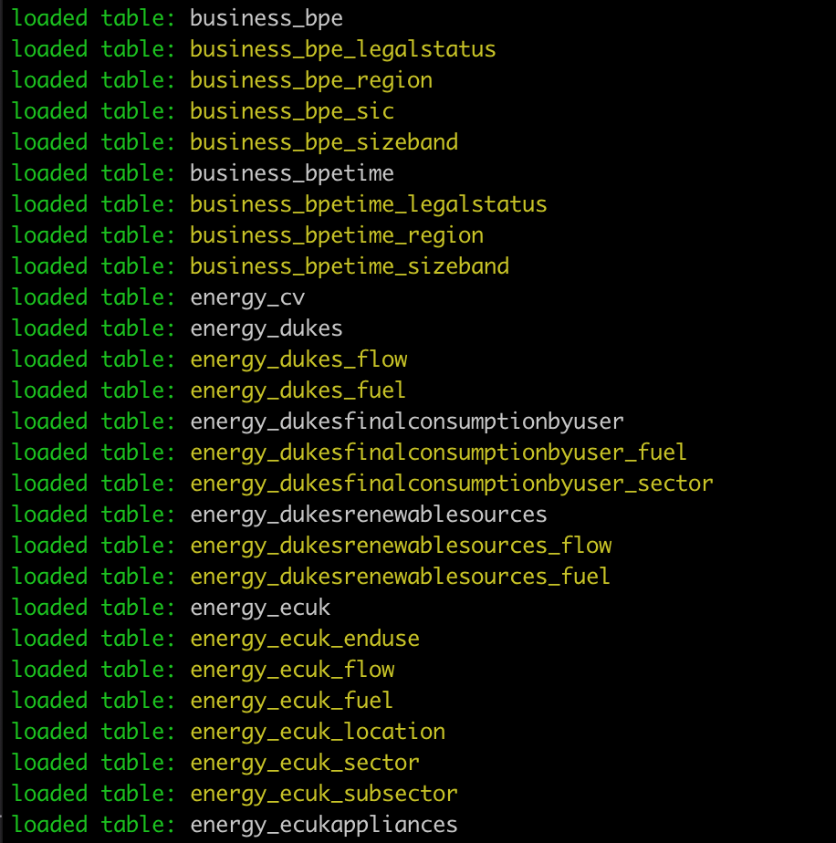

Data structures
The data is stored in a standard arrangement of tables, following specific naming conventions. Depending on the type of table, there will be standardisation of fields for metadata, with a bit more variability in field structure for the actual dataset. This is explained below.
Tables
The API is designed to be completely generic in how it serves up data. This is what distinguishes it from traditional web development where details about the data are known in advance so it is possible to carefully craft the SQL statements and simply drop in parameters.Some of what it needs to know is contained in the query preferences file that is loaded at startup. Relevant to the discussion about data is the fact that the SQL can be partially customised here.
The API also needs to know what tables exist. When the API starts, it gets this information by querying the database itself and asking it for a list of tables. There is a strict table naming convention that is used to allow the API to make sense of the tables, and their relationship to one another. As it is starting up, it outputs what it has read in to the console, with colour-coding to help differentiate different types of table:

This output is useful for explaining what is going on.
The first word of the table name (words here are separated by an underscore character) corresponds to the section of the API the table belongs to. These sections have their own URL and landing page (all automatically generated, of course), which would be accessible via:
http://api_hostname/business/
http://api_hostname/energy/
The second word of the table name is the name of the dataset i.e. the main data being served, such as DUKES or BPE. The main data table consists of just two words (these are in white in the console output). Each of these may also have associated metadata tables that enumerate the dimensions of the dataset. These append the name of the dimension to the two words of the main data table name (depicted in yellow in the console output). These dimension tables all have a standardised structure/fields.
The dimension metadata tables are important. In addition to recording the elements of the dimension, they are used for:
- whitelisting (if the variable isn't in the dimension table, it is rejected)
- automatically laying out the user interface for the data downloader
Also note that tables prefixed with a single underscore character are considered private by the API. This means that although the API is aware of them, it will not automatically publish their data, and will ignore requests addressing those tables. It is a limited use case intended for situations where specific code will be written to handle these tables, for instance to restrict access or only expose aggregate data. They would need to be treated with care, and no datasets implement this - and neither is there currently any existing code written to handle these.
Tables prefixed with two underscore characters are completely ignored by the API. They are intended for the situation where the database is shared with other apps on a development machine. The public server should not normally need to use this feature unless there is some other server app running - which is not currently the case.
Fields
There is a degree of standardisation in the fields used; the dimension tables are essentially fixed, and there is a pattern in the definition of main table fields based on the dimensions. That does not mean that there are no redundant fields: there are many. These were mostly experimental fields used early in the development process to try out ideas that were later dropped, but without tidying up afterwards just in case they would be reinstated later.In the case of the dimension tables, the standard SQL statement to create one is like this:
CREATE TABLE energy_dukes_fuel (
ref_order integer NOT NULL,
id character varying(127),
name character varying(255),
parent character varying(63),
code character varying(31),
size smallint,
status smallint,
aggregate_type character varying(7),
mult smallint,
colour character varying(7)
);
The fields that are actively used are: ref_order, id, name, parent.
The other fields (code, size, status, aggregate_type, mult, colour) are not used except in some edge cases. They remain because it is easier to leave them in than risk breaking something. In some cases, fields have been repurposed in the UI, so leaving them in can be beneficial too (in fact see 03. Using the API to get data - the tree diagram for the fuel uses the colour field to apply colour to each nodes).
The relationship between dimension metadata tables and the main data is central to the way the API works. Each dimension is enumerated in a metadata table. For instance, considering the energy_dukes_fuel table, this lists every type of fuel mentioned in DUKES. It is entirely possible (as for DUKES fuel) that a new dataset/dimension will also not be a simple flat list, but has a hierarchical structure. The parent field in the dimension tables is there to record such hierarchical connections.
The hierarchy isn't directly recorded in the main data, as the pattern is to unpivot the spreadsheet data into a tall and wide table with each row containing just one numerical value. Each dimension is recorded in a field for each row, but no indication of hierarchy is needed here. This is because the dimension is needed here in order to search based on a dimension value - which is fundamental to giving the user what they want, as they primarily search for dimension values. The dimension is often split into a denormalised and therefore slightly redundant triple consisting of dimension_id, dimension_identfier, and dimension_label. Within the main data table, only the numeric dimension_id is strictly necessary, but having the other fields can be useful.
This example shows how this looks in practice. Spaces have been introduced for visual clarity to show the groupings of fields for sizeband, region, sector, sic and legalstatus. The fields at the beginning contain the data you want to retrieve. The oddity here is measure, which contains the character 'B', 'T', 'E' or 'W' so it doesn't make sense to add a numeric field as well.
CREATE TABLE business_bpe (
id serial PRIMARY KEY,
year smallint,
value double precision,
unit varchar(31),
status smallint,
measure varchar(7),
measure_label varchar(31),
sizeband varchar(31),
sizeband_label varchar(127),
sizeband_order smallint,
region varchar(31),
region_label varchar(31),
region_id smallint,
sector varchar(31),
sector_label varchar(255),
sector_id smallint,
sic varchar(255),
sic_desc varchar(255),
sic_id smallint,
legalstatus varchar(127),
legalstatus_label varchar(127),
legalstatus_id smallint,
src smallint
);
Data: content preparation
The value assigned to the dimension in the original source data is often not conducive to one of several data processing tasks:
- transmitting as a user request as part of a URL
- sorting
- searching
In fact, their only use is often as a label. They need to be transformed into something useful. For inclusion in a URL, they need to be composed only of suitable characters - so no spaces or anything else not allowed in a URL. For searching, the value recorded needs to be unique. In DUKES, for instance, there are many different references to 'Electricity' with the information distinguishing 'Primary' or 'Secondary' not apparent from the label. For sorting, the values recorded for dimensions should have some natural order. There is already an alphabetic order imposed by the name, but this may not be desired, so a numeric field is used to make the sort order explicit. All this information is in the dimension tables, but when the main data is imported, all that is available is the label. Therefore some pre-processing is needed to backfill the missing data. This is a set of simple find-and-replace actions - no imputation is required. It can involve many replacements. It doesn't matter where they are done, though thus far they have been done as multiple UPDATE commands in SQL.
For instance, this example from DUKES illustrates the need for disambiguation for Ethane, Propane and Butane with the same label from different data sources:
From DUKES table 3.1
CREATE TABLE energy_dukes_fuel (
UPDATE energy_dukes SET fuel_ref = 15 WHERE fuel_type = 'Crude oil' AND src IS NULL;
UPDATE energy_dukes SET fuel_ref = 16 WHERE fuel_type = 'Ethane' AND src IS NULL;
UPDATE energy_dukes SET fuel_ref = 17 WHERE fuel_type = 'Propane' AND src IS NULL;
UPDATE energy_dukes SET fuel_ref = 18 WHERE fuel_type = 'Butane' AND src IS NULL;
UPDATE energy_dukes SET fuel_ref = 19 WHERE fuel_type = 'Condensate' AND src IS NULL;
UPDATE energy_dukes SET fuel_ref = 20 WHERE fuel_type = 'NGL' AND src IS NULL;
UPDATE energy_dukes SET fuel_ref = 21 WHERE fuel_type = 'Feedstock' AND src IS NULL;
UPDATE energy_dukes SET fuel_ref = 22 WHERE fuel_type = 'Primary oil' AND src IS NULL;
From DUKES table 3.2
CREATE TABLE energy_dukes_fuel (
UPDATE energy_dukes SET fuel_ref = 23 WHERE fuel_type = 'Ethane' AND src IS NULL;
UPDATE energy_dukes SET fuel_ref = 24 WHERE fuel_type = 'Propane' AND src IS NULL;
UPDATE energy_dukes SET fuel_ref = 25 WHERE fuel_type = 'Butane' AND src IS NULL;
UPDATE energy_dukes SET fuel_ref = 26 WHERE fuel_type = 'Other gases' AND src IS NULL;
-- etc.
These are standard replacements and change little between years, so these UPDATEs are stored in a file and re-run for new data. In future, these could be implemented using an alternative mechanism more amenable to use within a data pipeline, such as storing the find/replace pairs in a data structure and looping over them in code.
Also for future consideration is a way of adding data incrementally rather than as currently, which assumes complete replacement. Experiments have been done that show this can be done, but this topic is out of scope here.